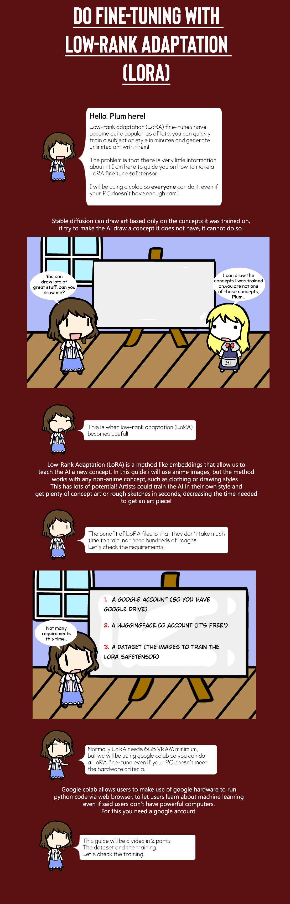
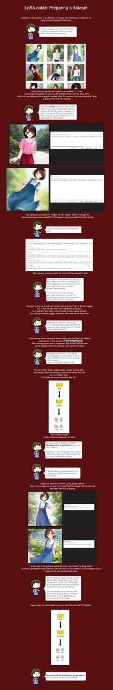
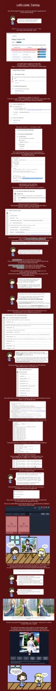

FineTuneDiffusion
Advance Advice for Model Training and Fine Tuning
This is advice for those who already understand the basics of training a checkpoint model and want to up their game. I'll be giving very specific pointers and explaining the reason behind them using real examples from my own models (which I'll also shamelessly plug). My experience is specific to checkpoints, but may also be true for LORA.
Summary
Training images
- Originals should be very large, denoised, then sized down
- Minimum 10 per concept, but much more is much better
- Maximize visual diversity and minimize visual repetition (except any object being trained)
Style captioning
- The MORE description, the better (opposite of objects)
- Order captions from most to least prominent concept
- You DON'T need to caption a style keyword (opposite of objects)
- The specific word choice matters
Object captioning
- The LESS description, the better (opposite of styles)
- Order captions from most to least prominent concept (if more than one)
- You DO need to caption an object keyword (opposite of styles)
- The specific word choice matters
Learning rate
- Probably 5e-7 is best, but it's slowwwww
The basic rules of training images
I've seen vast improvements by increasing the number of images and quality in my training set. Specifically, the improvements were: more reliably generating images that match trained concepts, images that more reliably combined concepts, images that are more realistic, diverse, and detailed, and images that didn't look exactly like the trainers (over-fitting). But why is that? This is what you need to know:
- Any and every large and small visual detail of the training images will appear in the model.
- Anything visual detail that's repeated in multiple training images will be massively amplified.
- If base-SD can already generate a style/object that's similar to training concepts, then fewer trainer images will be needed for those concepts.
How many training images to use
The number of images depends on the concept, but more is always better.
With Everydream2, you don't need to enter in a set of "concepts" as a parameter. Instead, you simply use captions. So when I use the term "concept" in this post, I mean the word or words in your caption file that match a specific visual element in your trainers. For example, my Emotion-Puppeteer model contains several concepts: one for each different eye and mouth expression. One such concept is "seething eyes". That's the caption I used in each image that contained a face with eyes the look angry with the brows scrunched together in a >:( shape. Several trainers shared that concept even though the faces were different people and the mouths paired with the "seething eyes" were sometimes different (e.g. frowning or sneering).
So how many images do you need? Some of the eye and mouth concepts only needed 10 training images to reliably reproduce the matching visual element in the output. But "seething eyes" took 20 images. Meanwhile, I have 20 trainers with "winking eyes", and that output is still unreliable. In a future model, I'll try again with 40 "winking eye" trainers. I suspect it's harder to train because it's less common in the LAION dataset used to train SD. Also keep in mind, that the more trainers per concept the less over-fitting and the more diversity of the output. Some amateurs are training models with literally thousands of images.
In my Huggingface, I list exactly how many images I used for each concept used to train Emotion Puppeteer so that you can see how those difference cause bias.
How to select trainer images
This may seem obvious - just pick images that match the desired style/object right? Nope! Consider trainer rules #1 and #2. If your trainers are a bit blurry or contain artifacts, those will be amplified in the resulting model. That's why it's import, for every single training image to:
- Start with images that are no smaller than 1,0002before resizing.
- Level-balance, color-balance, and denoise before resizing.
Note that the 10002 size is the minimum for a typical 5122 model. For a 7682 model, the minimum is 1,5002 images. If you don't follow the above, your model will be biased towards lacking contrast, having color-bias, having noise, and having low detail. The reason you need to start with higher-res images is that you need to denoise them. Even with high-quality denoising software, some of the fine detail besides the noise will be unavoidably lost. But if you start large, then any detail loss will be hidden when you scale down (e.g. to 5122). Also, if you're using images found only, they will typically be compressed or artificially upscaled. So only the largest images will have enough detail. You can judge the quality difference yourself by starting with two different sized images, denoising both, then scaling both down to a matching 5122.
The reverse of trainer rule #1 is also true: anything that's NOT in the trainers won't appear in the model. That including fine detail. For example, My Emotion-Puppeteer model generates closeups of faces. In an earlier version of the model, all output lacked detail because I didn't start with high-res images. In the latest model I started with hi-res trainers, and even when scaled to 5122, you can see skin pores and fine wrinkles in the trainers. While nothing is guaranteed, these details can show up in the output of the latest model.
If you can't find larger training images, then at least upscale before resizing to the training size. Start with a denoised image, then quadruple its size using upscaling software (e.g. the "extras" tab within Auto1111). Finally, scale it down to to train size. That at least will make all of the edges clean and sharp, remove artifacts, and smooth solid areas. But this can't replace the missing authentic details. Even the best GAN upscalers leave a lot to be desired. Still, it's better than not. Any blurriness or artifacts in your trainers will be partially learned by the model.
Avoid visual repetition as much as possible except for the thing you want to reproduce
Remember trainer rule #2. Here's an example. For my Emotion-Puppeteer model, I needed to images of the many eye and mouth positions I wanted to train. But it's hard to find high-quality images of some facial expressions. So for one of the mouth positions (aka concepts), I found several photos of the same celebrity making that expression. Out of all the trainers I found for that mouth concept, I ended up with about ~10% that were photos of that celebrity. In my latest model, when that mouth keyword is used in a prompt, the face looks recognizably like that celebrity, I'd guess, about a 3rd of the time. The 10% of that celebrity has been amplified by about 3x.
This amplification effect isn't only limited to the things that you explicitly describe in the captions. Literally anything that's visually similar across images, anywhere in those images will be trained and amplified.
Here another example: The reason for that was that, in an earlier version of Emotion-Puppeteer, I had cropped all of my trainer photos at the neck. So the model struggled to generate output that was zoomed-out and cropped at the waist. To get around that limitation, I tried an experiment. I found one photo that was cropped at the waist, and then I used my model with inpainting to generate new images of various different faces. I then added those new images to my training set and trained a 2nd model.
Those generate images only made up about ~15% of the training set that I used to train the 2nd model, but the background was the same for each, and it happened to be a wall covered in flowers. Note that none of my captions contained "flowers". Nevertheless the result was that most of the images generated by that 2nd model contained flowers! Flowers in the background, random flowers next to random objects, flowers in people's hair, and even flowers in the fabric print on clothing. The ~15% of uncaptioned flowers made the whole model obsessed with flowers!
Visually diverse trainers are critical for style and object matters
This is similar to the advice to avoid visual repetition, but it's worth calling out. For a style model, the more diverse and numerous the objects in the trainers, the more examples of objects in that style the model has to learn from. Therefore, the model is better able to extract the style from those example objects and transfer it to objects that aren't in the trainers. Ideally, your style trainers will have examples from inside, outside, closeup, long-shot, day, night, people, objects, etc.
Meanwhile, for an object model, you want the trainers to show the object being trained as many different angles and lighting conditions as possible. For an object model, the more diverse and numerous the "styles" (e.g. lighting conditions) in the trainers, the more examples of styles of that object the model has to learn from. Therefore, the model is better able to extract the object from those example styles and transfer onto it styles that aren't in the trainers. The ideal object trainer set will show the object from many angles (e.g. 10), repeating all that set of angles in several lighting conditions (e.g. 10x10), and using a different background in every single trainer (e.g. 100 different backgrounds). That prevents the backgrounds from appearing unprompted in the output.
Some concepts are hard to train, and some concepts probably can't be trained
This is trainer rule #3, and mostly you'll discover this through experimentation. Mostly. But if the base SD model struggles with something, you know that'll be harder to train. Hands are the most obvious example. People have tried to train a model that just does hands using hundreds of images. That hasn't been successful because the base SD 1.5 model doesn't understand hands at all. Similarly SD 2.1 doesn't understand anatomy in general, and people haven't been able to train anatomy back in. The base or starting point for the fine-tuning is just too low. Also, hands and bodies can form into thousands of very different silhouettes and shapes, which aren't captured in LAION dataset captions. Maybe ControlNet will fix this.
In my own experience with Emotion-Puppeteer, so far I haven't been able to train the concept of a the lip-biting expression. Maybe I could if I had a 100 trainers. The "winking eyes" concept is merely unreliable. But I actually had to remove the lip-biting trainer images entirely from the model and retrain because including that concept resulted in hideously deformed mouths even when caption keyword wasn't used in the prompt. I even tried switching the caption from "lip-biting" mouth to "flirting mouth", but it didn't help.
Here's another example: I tried to train 4 concepts using ~50 images for each: a.) head turned straight towards the camera and eyes looking into the camera, b.) head turned straight towards the camera but eyes looking away from it, c.) head turned to a three-quarter angle but eyes looking into the camera, and d.) head turned away and eyes looking away. While a, b, and d, worked, c failed to train, even with 50 images. So in the latest model, I only used concepts a and d. For the ~100 images of 3/4 head turn, whether eyes looking to camera or not, I captioned them all as "looking away". For the ~50 images of head facing forward but eyes looking away, I didn't caption anything, and for the other ~50, I captioned "looking straight". This resulted in looking into camera and 3/4 head turn both becoming more reliable.
The basic rules of captioning
You've probably heard by now that captions are the best way to train, which is true. But I haven't found any good advice about how to caption, what to caption, what words to use, and why. I already made one post about how to caption a style, based what I learned from my Technicolor-Diffusion model. Since that post, I've learned more. This is what you need to know:
- The specific words that you use in the captions are the same specific words you'll need to use in the prompts.
- Describe concepts in training images that you want to reproduce, and don't describe concepts that you don't want to reproduce.
- Like imagery, words that are repeated will be amplified.
- Like prompting, words at the start of the caption carry more weight.
- For each caption word you used, the corresponding visual elements from your trainers will be blended with the visual elements that the SD base model already associates with that word.
How to caption ~style~ models
The MORE description the better.
An ideal style model will reproduce the style no matter what subject you reference in the prompt. The greater the visual diversity or subject matter of the images, the better SD is able to guess what that visual style will look like on subjects that it hasn't seen in that style. Makes sense, right? So why are more word descriptions better? Because it's also the case that the greater the linguistic diversity of the captions, the better SD is able to relate those words to the adjacent words it already knows, and the better it will apply the visual style to those adjacent concepts that aren't in the captions. Therefore, you should describe in detail every part of every object in the image, the positions and orientations of those objects and parts of objects, and whether they're in the foreground or background. Also describe more abstract concepts such as the lighting conditions, emotions, beautiful/ugly, etc.
Consider captioning rule #1. In my earlier post about training Technicolor-Diffusion, I showed an example where using one of the full and exact captions as the prompt reproduced that training image nearly exactly. And I showed that replacing one of those caption words (e.g. changing woman to girl) generated an image that was just like the training image except for the part that matched that word (woman became girl visually). It follows that the more words you use in your caption, the more levers you have to change in this way. If you only captioned "woman", then you can only reliably change "woman" in the output image. But if you captioned "blonde woman", then you can reliably change "blonde" (e.g. to redhead) while keeping woman. You can't over-describe, as long as you don't describe anything that's NOT in the image.
Describe the image in order from most to least prominent concept (usually biggest to smallest part of image)
Consider captioning rule #4. Let's say that you have an illustration of a man sitting in a chair by a pool. You could - and should - caption a hundred things about that image from the man's clothing and hairstyle, to the pair of sunglasses in his shirt-pocket, down to the tiny glint of sunlight off the water in the pool in the distance. But if you asked an average person what the image contained, they'd say something like "a man sitting in a chair by a pool" because those are both the biggest parts of the image and the most obvious concepts.
Captioning rule #4 says that, just as words at the start of the prompt are most likely to be generated in the image, words at the start of the caption are most likely to be learned from the trainer image. You hope your style model will reproduce that style even in glint of light in the distance. But that detail is hard to learn because it's so small in pixel size and because "glint" as a concept isn't as obvious. Again, you can't over describe so long as you order your captions by concept prominence. Those words and concepts at the end of the caption are just less likely to be learned.
You don't need to caption a style keyword - e.g. "in blob style"
The traditional advice has been to include "blob style" at the front of every caption - where "blob" is any random keyword that will be used in the prompt to invoke the style. But, again, that just means that you're now required to put "blob style" into every prompt in order to maximize the output of that style. Meanwhile, your blob model output is always going to be at least a bit "blobby", so your fine-tuned style model is already ruined as a completely generic model, and that's the whole point. Why would anyone use your "blob style" model if they don't want blobby images? It's easy enough to switch models. So it's better to just leave "blob style" out of your captions.
The reason for the traditional advice is captioning rule #3. By repeating the word "style", you ensure that the training ends up amplifying the elements of style in the images. But the issue is that "style" is too generic to work well. It can mean artistic, fashionable, or a type of something (e.g. "style of thermos"). So SD doesn't know what part of the images to map the concept of style. In my experience, putting it in doesn't make the model more effective.
Use words with the right level of specificity: common but not too generic
This is a hard to understand idea that's related to captioning rule #5. SD will take each word in your captions and match it with a concept that it recognizes in your trainers. It can do that because it already has visual associations with that word. It will then blend the visual information from in your trainers with its existing visual associations. If your caption words are too generic, that will cause lack of style transfer, because there are too many existing visual associations. Here's an example. Let's say that one of your trainer images for your style model happens to contain an visual of a brandy snifter. If you caption that as "a container", the base SD model knows a million examples of container that come in vastly different sizes and shapes. So they style of the brandy snifter becomes diluted.
On the flip side, if your captions words are too novel or unusual, it may cause over-fitting. For example, imagine that you caption your image as "a specialblob brandy snifter". So you're using the keyword "specialblob" that SD definitely doesn't already know, and you're using the uncommon word "snifter". If you were trying to train an object model that that exact special snifter specifically, you would want caption like that. Essentially, this tells SD, "the snifter you see in the image is unique from other snifters - it's a specialblob." That way when you prompt "specialblob", the output will be that exact snifter from the training image rather than some generic snifter. But for a style model, you don't care about the snifter itself but rather the style (e.g. swirly brush strokes) of the snifter.
Rather than "container" or "snifter", a good middle-ground of specificity might be "glassware". That's a more common word, yet all glassware all somewhat similar - at least semi-transparent and liquid holding. This middle-ground allows SD to match the snifter with a smaller pool of similar images, so swirliness of your trainer image is less diluted. I only have limited anecdotal evidence for this advice, and it's very subjective. But I think using simple common words is a good strategy.
You may or may not want to caption things that are true of ALL the training images
Here the rules conflict, and I don't have solid advice. Captioning rule #3 is that words repetitions will be amplified. So if All of the trainers are "paintings with "swirly brush strokes", then theoretically including those words in the captions will make the training pay attention to those concepts in the training images and amplify them. But trainer rule #2 is that visual repetitions will be amplified even if you don't caption them. So the swirliness is gauranteed to be learned anyway. Also, captioning rule #1 is that if you do include "swirly brush strokes" in the caption for every image, then you'll also need to include those words in the prompt to make the model generate that style most effectively. That's just a pain and needlessly eats up prompt tokens.
This likely depends on how generic these concepts are. Every training image could be captioned as "an image". But that's certainly useless since an image could literally look like anything. In this example, where every image is a painting, you could also use the caption "painting" for every trainer. But that's probably also too generic. Again, relating to rule #5, the captioned visual concepts get blended with existing SD's existing visual concepts for that word, so that's blending with the millions of styles of "painting" in LAION. "Swirly brush strokes" might be specific enough. Best to experiment.
How to caption ~object~ models
You can find proof for most of this advice in my other post that shows an apples to apples comparison of object captioning methods.
DO use keywords - e.g. "a blob person". (opposite from style models)
Let's say that you're training yourself. You need a special keyword (aka "blob") to indicate that you are a special instance of a generic object, i.e. "person". Yes, you are a special "blob person"! Every training image's caption could be nothing more than "blob person". That way, the prompt "blob person" will generate someone who looks like you, while the prompt "person" will still generate diverse people.
However, you might want to pair the special keyword with multiple generic objects. For example, if you're training yourself, you may want to use "blob face" for closeups and "blob person" or "blob woman" for long-shots. SD is sometimes bad at understanding that a closeup photo of an object is the same object as a long-shot photo of that object. It's also pretty bad at understand the term "closeup" in general.
The LESS description the better. (opposite from style models)
If you're training yourself, your goal is for the output to be recognizable as you but to be flexible to novel situations and styles that aren't found in the training images. You want the model to ignore all aspects of the trainers that aren't part of your identity, such as the background or the clothes that you're wearing. Remember captioning rule #1 and its opposite. For every caption word you use, the corresponding detail of the training images will be regenerated when you use that word in the prompt. For an object, you don't want that. For example, let's say a trainer has a window in the background. If you caption "window", then it's more likely that if you put "window" into the prompt, it'll generate that specific window (over-fitting) rather than many different windows.
Similarly, you don't want to caption "a beautiful old black blob woman", even when all of those adjectives are true. Remember caption rule #3. Since that caption will be repeated for every trainer, you're teaching the model that every "beautiful old black woman" looks exactly like you. And that concept will bleed into the component concepts. So even "old black woman" will look like you, and probably even "old black man"! So use as few words as possible, e.g. "blob woman".
There are cases were you do need to use more than just "blob person". For example, when the photos of you have some major difference, such as a two different hairstyles. In that case, SD will unsuccessfully try to average those differences in the output, creating a blurry hairstyle. To fix that, expand the captions as little as needed, such as to "blob person, short hair" and "blob person, long hair". That also allows you to use "short" and "long" in the prompts to generate those hairstyles separately. Another example is if you're in various different positions. In that case, for example, you might caption, "blob person, short hair, standing" and "blob person, short hair, sitting."
SD already understands concepts such as "from above" and "from below", so you don't need to caption the angle of the photo for SD to be able to regenerate those angles. But if you want to reliably get that exact angle, then you should caption it, and you'll need several trainer images from that same angle.
For multiple concepts, describe the image in order from most to least prominent concept. (same as for style models)
Read the same advice for style models above for the full explanation. This is less important for an object model because the captions are so much shorter - maybe as short as "blob person". But if you're adding hair style to the caption, for example, then the order you want is "blob person, short hair" since "person" is more prominent and bigger in the trainer image than "hair".
In my Emotion-Puppeteer model, I captioned each images as "X face, Y eyes, Z mouth". The reason for "X face" is that I wanted to differentiate between "plain" and "cute" faces. Face is first because it's a bigger and broader concept that eyes and mouths. The reason for "Y eyes" and "Z mouth" is that I wanted to be able to "puppeteer" the mouth and eyes separately. Also, it wouldn't have worked to caption, "angry face" or "angry emotion" because an angry person may be frowning, pouting, gnashing their teeth. SD would have averaged those very different trainers together into a blurry or grotesque mess. After face, eyes, and mouths, I also included the even less prominent concepts of "closeup" and "looking straight". All of those levers were successfully trained.
Use words with the right level of specificity: common but not too generic. (same as for style models)
Read the same advice for style models above for the full explanation. This is a bit tricky. If you are a woman, you could theoretically caption yourself as "blob image", "blob person", "blob woman", "blob doctor", or "blob homo sapiens". As described above, "image" is way too generic. "Doctor" is too specific, unless your images are all of you in scrubs and you want the model to always generate you in scrubs. "Homo sapiens" is too uncommon, and your likeness may get blended (captioning rule #5) with other homo sapiens images that are hairy and naked. "Woman" or "person" are probably the right middle-ground.
Here's a real-world example. In my Emotion-Puppeteer model, I wanted a caption for images where the eyes seem to be smiling - when the eyes are crescent shaped with crinkled in the corners caused by raised cheeks. I wanted to be able to generate "smiling eyes" separately from "smiling mouth" because it's possible to smile with your eyes and not your mouth - i.e. "smizing", and it's also possible to smile with your mouth and not your eyes - i.e. a "fake smile". So in an earlier version of my model, I used the caption "smiling eyes". This didn't work well because the base SD model has such a strong association of the word "smile" with mouths. So whenever I prompted "smiling eyes, frowning mouth", it generated smiling mouths.
To fix this in the latest model, I changed the caption to "pleasing eyes", which is a very specific and uncommon word combination. Since the LAION database probably has few instances of "pleasing eyes", it acts like a keyword. It ends up being the same as if I had used a unique keyword such as "blob eyes". So now when you prompt "pleasing eyes", the model gives you eyes similar to my training images, and you can puppeteer those kind of eyes separately from the mouths.
Learning rate
The slower the better, if you can stand it. My Emotion-Puppeteer model was trained for the first third of its steps at 1.5e -6, then sped up to 1.0e -6 for the final two-thirds. I saved checkpoints at several stages and published the model with that generates all of the eye and mouth keywords the most reliably. However, that published model is "over-trained" and needs CFG of 5 or else the output looks fried. I had the same problem with my Technicolor-Diffusion model: the style didn't become reliable until the model was "over-trained".
The solution is either an even slower learning rate or even more training images. Either way, that means a longer training time. Everydream2 defaults to 1.5e -6, which is deffo too fast. Dreambooth used to default to 1.0e -6 (not sure now). Probably 5e -7 (aka half the speed of 1.0e -6) would be best. But damn, that's slow. I didn't have the patience. Some day I'll try it.
The best training software
As of Feb 2023, Everydream2 is the best checkpoint training software.
Note that I'm not affiliated with it in any way. I've tried several different options, and here's why I make this claim: Everydream2 is definitely the fastest and probably the easiest. You can use training images with several different aspect ratios, which isn't possible in most other software. Lastly, it's easy to set up on Runpod if you don't have an expensive GPU. Everydream2 doesn't use prior-preservation or a classifier image set. That's no longer necessary to prevent over-fitting, and that saves you time.
Of course, this could all be obsolete soon given how quickly as things keep advancing!
If you have any experience that contradicts this advice, please let me know!
Additional Comment
Great writeup! Definitely not a ton of great info out there for people doing large projects that extend beyond your basic "here's my face, 'dreambooth' it" type stuff.
ED2 author here, a few notes:
- Shouldn't need to worry too much about downsizing your images prior to training, they're resized on the fly (bicubic, which should be best general case resize), and crop jitter feature needs them to be slightly larger than your target training size (i.e. if training at 512, you ideally want like 520x520 bare minimum, but 2000x2000 is fine too, I personally recommend 1.5+ megapixel just to allow yourself headroom to train at higher res in the future as tech improves). You can feed in 4K images if you want, shouldn't have any appreciable impact on performance as the data loader is multithreaded and preloads stuff on CPU. Having 4k+ images shouldn't hurt anything but your disk space. You may kick yourself in the future if you resize everything to 512x512 or 768x768 or whatever. Crop jitter is also a quality improvement and it needs "buffer" in the training image size to slice off a few edge pixels to shift the image around every epoch. Here's a video that talks about crop jitter and a bit about resolution and aspects, etc: https://www.youtube.com/watch?v=0xswM8QYFD0
- You might consider toying with conditional dropout especially to "force" a style into the model, but high values can start to cause weird behavior. Its a way to help make a style take over the whole model. Conditional dropout is a fairly powerful tool. I might suggest if you want to completely take over the model with style using 0.10-0.15. Higher values will cause bleeding, especially at lower CFG scale at inference.
Order captions from most to least prominent concept
Definitely, character names should be up front, and if you have 2+ characters better to just list their names instead of trying to cram outfit information in as well, and instead use the solo images to details outfits and such, and keep your 2+ character images to <15%, maybe even <10%, but you can train SD to paint 2 characters at once if you give it enough data and examples. 3+ is still very elusive, probably needs inference tricks, inpainting, maybe some controlnet stuff would help now.
You mention starting at 1.5e-6 then going to 1e-6, makes sense, make sure you use the chaining feature. You can setup a few copies of train.json (or look at chain0.json, chain1.json etc) with different settings and run them from a batch file in order. "resume_ckpt": "findlast" will resume from the last training sessions. There's an example chain.bat (can rename to .sh for linux) in the repo and chain0.json, chain1.json, chain2.json that shows how you can chain them together. Only the first chain0 would use "resume_ckpt": "sd_v1-5_vae" or whatever base model, then the rest use "findlast" to resume in order. This means you can tweak any setting and walk away to let something run overnight and have it change settings as it goes. I feel chaining is a bit underutilized in the community.
For training smaller dreambooth type models, I've found it useful to actually copy your training images, one with a full caption, the other with just the person's name. Ex. "joe smith" and "joe smith in a blue cardigan sitting at a desk". Most useful when you are just doing a face/person with like 20-40 images.
Captioning Datasets for Training Purposes
In the spirit of how open the various SD communities are in sharing their models, processes, and everything else, I thought I would write something up based on my knowledge and experience so far in an area that I think doesn’t get enough attention: captioning datasets for training purposes.
DISCLAIMER
I am not an expert in this field, this is simply a mix of what has worked for me, what I've learned from others, my understanding of the underlying processes, and the knowledge I've gained from working with other types of datasets.
I have found this workflow to be reasonably efficient when manually captioning a dataset considering the resulting quality of the captions compared to automated captioning. But be warned, if you are looking to caption hundreds of photos, it's still gonna take some time. To be clear, that means I am saying this method is not good for captioning truly large datasets with tens of thousands of images. Unless you are a masochist.
Sometimes I say "tag" and sometimes "caption". I was going to go through and fix it all, but I had captioning to do, so maybe I will make it uniform later.
I do not consider this document "finished". There is so much to learn, and the AI space is moving so fast, that it will likely never be finished. However, I will try to expand and alter this document as necessary.
My experience has primarily been with LoRA training, but some of the aspects here are applicable to all types of training.
WHO IS THIS DOCUMENT FOR
I hope this document can be helpful to anyone who is somewhat seriously interested in training their own models in Stable Diffusion using their own datasets. If your goal is to quickly teach your face to a model, there are much better guides available which will have you up and running in a flash. But if your goal is to go a bit deeper, explore training in more depth, perhaps you can add this document to your resources.
DATASET
Obtaining a good dataset is talked about extensively elsewhere, so I've only included the most important parts:
- high quality input means high quality output
- more quantity and more variety is better
- If you are forced to choose between quality and quantity, quality always wins.
- Upscale as a last resort, avoid it if possible. When I am forced to upscale, I use LDSR via Automatic1111.
PREPARATION
Depending on how and what you are training, you may need to crop the photos to a specific width and height. Other types of training will bucket images into various sizes and do not require cropping. Look into what is required for the method of training you are doing, the model you are training on, and the program you are using to train your model with.
CAPTIONING – GENERAL NOTES
The following recommendations are based on my experiments, my background work with other datasets, reading subject-matter papers, and borrowing from other successful approaches.
Avoid automated captioning, for now.
- BLIP and deepbooru are exciting, but I think it is a bit early for them yet.
- I often find mistakes and extremely repetitive captions, which take awhile to clean up.
- They struggle with context and with relative importance.
- I think it is faster to manually caption, rather than fix mistakes that BLIP/deepbooru made and still have to manually caption.
Caption in the same manner you prompt.
- Captioning and prompting are related.
- Recognize how you typically prompt. Verbose sentences? Short descriptions? Vague? Detailed?
- Caption in a similar style and verbosity as you tend to when prompting.
Follow a set structure per concept.
- Following a structure makes the process easier on you, and although I have no objective evidence, my intuition says that using a consistent structure to describe your dataset will benefit the learning process.
- You might have a structure you use for photographs and another structure you use for illustrations. But try to avoid mixing and matching structures when captioning a single dataset.
- I have explained the structure I generally use below, which can be used as an example.
Captions are like variables you can use in your prompts.
-
Everything you describe in a caption can be thought of as a variable that you can play with in your prompt. This has two implications:
-
You want to describe as much detail as you can about anything that isn’t the concept you are trying to implicitly teach. In other words, describe everything that you want to become a variable.
Example: If you are teaching a specific face but want to be able to change the hair color, you should describe the hair color in each image so that “hair color” becomes one of your variables. - You don’t want to describe anything (beyond a class level description) that you want to be implicitly taught. In other words, the thing you are trying to teach shouldn’t become a variable.
Example: If you are teaching a specific face, you should not describe that it has a big nose. You don’t want the nose size to be variable, because then it isn’t that specific face anymore.However, you can still caption “face” if you want to, which provides context to the model you are training. This does have some implications described in the following point.
Leveraging classes as tags
-
There are two concepts here.
-
Using generic class tags will bias that entire class towards your training data. This may or may not be desired depending on what your goals are.
-
Using generic class tags provides context to the learning process. Conceptually, it is easier to learn what a “face” is when the model already has a reasonable approximation of “face”.
-
If you want to bias the entire class of your model towards your training images, use broad class tags rather than specific tags.
Example: If you want to teach your model that every man should look like Brad Pitt, your captions should contain the tag “man” but should not be more specific than that. This influences your model to produce a Brad Pitt looking man whenever you use the word “man” in your prompt. This also allows your model to draw on and leverage what it already knows about the concept of “man” while it is training. - If you want to reduce the impact of your training on the entire class, include specific tags and de-emphasize class tags.
Example: If you want to teach your model that only “ohwxman” should look like Brad Pitt, and you don't want every "man" to look like Brad Pitt you would not use "man" as a tag, only tagging it with “ohwxman”. This reduces the impact of your training images on the tag “man”, and strongly associates your training images with “ohwxman”. Your model will draw on what it knows about “ohwxman”, which is practically nothing *see note*, thus building up knowledge almost solely from your training images which creates a very strong association. - NOTE* This is simplified for the sake of understanding. This would actually be tokenized into two tokens, “ohwx” and “man”, but these tokens would be strongly correlated for training purposes, which should still reduce the impact on the overall class of “man” when compared to training with “man” as a token in the caption. The math it all is quite complex and well beyond the scope here.
Consistent Captioning
- Use consistent captions across all of your training. This will help you better consistently invoke your concept when prompting. I use a program to aid me with this, ensuring that I always use the same captions.
- Using inconsistent tags across your dataset is going to make the concept you are trying to teach harder for SD to grasp as you are essentially forcing it to learn both the concept and the different phrasings for that concept. It’s much better to have it just learn the concept under a single term.
For example, you probably don’t want to have both “legs raised in air” and “raised legs” if you are trying to teach one single concept of a person with their legs up in the air. You want to be able to consistently invoke this pose in your prompt, so choose one way to caption it.
Avoid Repetition
- Try to avoid repetition wherever possible. Similar to prompting, repeating words increases the weighting of those words.
- As an example, I often find myself repeating the word "background" too much. I might have three tags that say "background" (
Example: simple background, white background, lamp in background). Even though I want the background to have low weight, I've unintentionally increased the weighting quite a bit. It would be better to combine these or reword them (Example: simple white background with a lamp).
Take Note of Ordering
- Again, just like with prompting, order matters for relative weighting of tags.
- Having a specific structure/order that you generally use for captions can help you maintain relative weightings of tags between images in your dataset, which should be beneficial to the training process.
- Having a standardized ordering makes the whole captioning process faster as you become familiar with captioning in that structure.
Use Your Models Existing Knowledge to Your Advantage
- Your model already produces decent results and reasonably understands what you are prompting. Take advantage of that by captioning with words that already work well in your prompts.
- You want to use descriptive words, but if you use words that are too obscure/niche, you likely can't leverage much of the existing knowledge.
Example: you could say "sarcrastic" or you could say "mordacious". SD has some idea of what "sarcastic" conveys, but it likely has no clue what "mordacious" is. - You can also look at this from the opposite perspective. If you were trying to teach the concept of "mordacious", you might have a dataset full of images that convey "sarcrastic" and caption them with both the tags "sarcastic" and "mordacious" side by side (so that they are close in relative weighting).
CAPTIONING – STRUCTURE
I use this mainly for people / characters, so it might not be quite as applicable to something like fantasy landscapes, but perhaps it can give some inspiration.
I want to emphasize again that I am not saying this is the only or best way to caption. This is just how I have found success with my own captions on my own datasets. My goal is simply to share what I do and why, and you are free to take as much or little inspiration from it as you want.
General format
Globals
- This is where I would stick a rare token (e.g. “ohwx”) that I want heavily associated with the concept I am training, or anything that is both important to the training and uniform across the dataset
Examples: man, woman, anime
Type/Perspective/"of a..."
- Broad descriptions of the image to supply context. I usually do this in “layers”.
- What is it?
Examples: photograph, illustration, drawing, portrait, render, anime. - Of a...
Examples: woman, man, mountain, trees, forest, fantasy scene, cityscape - What type of X is it (x = choice above)?
Examples: full body, close up, cowboy shot, cropped, filtered, black and white, landscape, 80s style - What perspective is X from?
Examples: from above, from below, from front, from behind, from side, forced perspective, tilt-shifted, depth of field
Action Words
- Descriptions of what the main subject is doing or what is happening to the main subject, or general verbs that are applicable to the concept in the image. Describe in as much detail as possible, with a combination of as many verbs as you want.
- The goal is to make all the actions, poses, and whatever else active that is happening into variables (as described in point 3 of “Captioning – General”) so that, hopefully, SD is better able to learn the main concept in a general sense rather than only learning the main concept doing specific actions.
Using a person as an example: standing, sitting, leaning, arms above head, walking, running, jumping, one arm up, one leg out, elbows bent, posing, kneeling, stretching, arms in front, knee bent, lying down, looking away, looking up, looking at viewerUsing a flower as an example: wilting, growing, blooming, decaying, blossoming
Subject Descriptions
- As much description about the subject as possible, without describing the main concept you are trying to teach. Once again, think of this as picking out everything that you want to be a variable in your prompt.
Using a person as an example: white hat, blue shirt, silver necklace, sunglasses, pink shoes, blonde hair, silver bracelet, green jacket, large backpackUsing a flower as an example: pink petals, green leaves, tall, straight, thorny, round leaves
Notable Details
- I use this as a sort of catch-all for anything that I don’t think is quite “background” (or something that is background but I want to emphasize) but also isn’t the main subject.
- Normally the part of the caption going in this spot is unique to one or just a few training images.
- I predominately use short captions in Danbooru-style, but if I need to describe something more complex I put it here.
For example, in a photo at a beach I might put “yellow and blue striped umbrella partially open in foreground”.For example, in a portrait I might put “he is holding a cellphone to his ear”.
Background / Location
- Fairly self-explanatory. Be as descriptive as possible about what is happening in the images background. I tend to do this in a few “layers” as well, narrowing down to specifics, which helps when captioning several photos.
-
For example, for a beach photo I might put (separated by the three “layers”): -
Outdoors, beach, sand, water, shore, sunset Small waves, ships out at sea, sandcastle, towelsthe ships are red and white, the sandcastle has a moat around it, the towels are red with yellow stripes
Loose Associations
- This is where I put any final loose associations I have with the image.
- This could be anything that pops up in my head, usually “feelings” that I feel when looking at the image or concepts I feel are portrayed, really anything goes here as long as it exists in the image.
- Keep in mind this is for loose associations. If the image is very obviously portraying some feeling, you may want it tagged closer to the start of the caption for higher weighting.
For example: happy, sad, joyous, hopeful, lonely, sombre
THE BOORU DATASET TAG MANAGER
You’ve got a dataset. You’ve decided on a structure. You’re ready to start captioning. Now it’s time for the magic part of the workflow: BooruDatasetTagManager (BDTM). This handy piece of software will do two extremely important things for us which greatly speeds up the workflow:
- Tags are preloaded in *\tags\list.tag, which can be edited. This gives us auto-complete for common tags, allows us to double-click common tags so we don’t need to type it out, etc.
- It enables you to easily be consistent with your captioning by displaying already-used captions so that you can easily add it to an image without typing it out.
As an added bonus, it helps when you're forgetful. Sometimes I forget that standing with most of your weight on one foot (but with both feet on the ground) is called contrapposto. But I have it saved as a tag, and usually remember it starts as "contra". Thankfully auto-complete is there to save the day. Seriously, having all of these tags at your fingertips is a huge difference from trying to remember a bunch of tags or having booru sites open in other tabs.
THE PROCESS
- Place all of your images in a folder and then navigate there in the BDTM UI, selecting the folder with your images.
- At the top, press “View” and then “Show preview” to see the selected image.
- If you have any globally applicable tags, add them on the right side of the UI. You can select where these global tags appear (top, bottom, or at a specific position in the list).
- Select your image on the left and begin adding tags, remembering to follow you structure as best as possible. As you type, the tags will show auto-complete options from the list.tag file which you can select, or you can type in your own custom ones.
- Each tag you have used anywhere in that dataset will show on the right side (under “All tags”). You can double-click a tag from the “All tags” section to apply it to the currently selected image, saving tons of time and ensuring tag consistency across your dataset
- Once all of your images are tagged, go back to the start and do it again. This time look at your tags and make sure they are ordered appropriately according to the weighting you want (you can drag them to reorder if necessary), make sure they follow your structure, check for missing tags, etc.
And that’s it. I patiently look at every image and add any tags I think are applicable, aiming to have at least one to two tags in each of the categories of my prompt structure. I usually have between 8 and 20 tags per image, though sometimes I might have even more.
Over time, I have edited the provided list.tag file removing many of the tags I’ll never use and adding a bunch of tags that I use frequently, making the whole process even easier.
FULL EXAMPLE OF A SINGLE IMAGE
This is an example of how I would caption a single image I picked off of safebooru. We will assume that I want to train the style of this image and associate it with the tag "ohwxStyle", and we will assume that I have many images in this style within my dataset.
Sample Image: https://safebooru.org/index.php?page=post&s=view&id=3887414
- Globals: ohwxStyle
- Type/Perspective/Of a: anime, drawing, of a young woman, full body shot, from side
- Action words: sitting, looking at viewer, smiling, head tilt, holding a phone, eyes closed
- Subject description: short brown hair, pale pink dress with dark edges, stuffed animal in lap, brown slippers
- Notable details: sunlight through windows as lighting source
- Background/location: brown couch, red patterned fabric on couch, wooden floor, white water-stained paint on walls, refrigerator in background, coffee machine sitting on a countertop, table in front of couch, bananas and coffee pot on table, white board on wall, clock on wall, stuffed animal chicken on floor
- Loose associations: dreary environment
All together: ohwxStyle, anime, drawing, of a young woman, full body shot, from side, sitting, looking at viewer, smiling, head tilt, holding a phone, eyes closed, short brown hair, pale pink dress with dark edges, stuffed animal in lap, brown slippers, sunlight through windows as lighting source, brown couch, red patterned fabric on couch, wooden floor, white water-stained paint on walls, refrigerator in background, coffee machine sitting on a countertop, table in front of couch, bananas and coffee pot on table, white board on wall, clock on wall, stuffed animal chicken on floor, dreary environment
The best part is, I can set all of those "global" ones in BDTM to apply to all of my images. I've now also got all of those tags ready just a double-click away, so if my next image is also a full body shot, from the side, sitting... I just double-click it. Much easier than typing it out again.
TRAIN
Time to start training! I don't have much to write here other than experiment. There is no golden number of steps or guaranteed results when it comes to training. That's why it's fun to experiment. And now you can experiment knowing that you have an extremely high quality dataset, allowing you to really hone-in on the appropriate training settings.
MISC THOUGHTS AND REFERENCES
- I always try to remind myself that we are just gently guiding the learning process, not controlling it. Your captions help point the learning process in the right direction, but the captions are not absolute. Inferences will be made on things in the image that weren't captioned, associations will be made between tags and parts of the image you didn't intend, etc. Try to guide, but trust in the training and the quality of your images as well.
- Danbooru/safebooru tags are great. I mean, there's a lot of trash ones that hold no meaning, but take a look at the Danbooru wiki for tag group "Posture" as an example. Dozens of specific words for different arm positions, leg positions, etc. You might just find that one specific word you've been searching for that describes the style/pose/lighting/whatever by crawling through the danbooru tags and wiki. Maybe you've always wanted someone posing with that ballerina style foot where the toes are pointed downwards. Well it's called plantar flexion; thanks danbooru tags.
Detailed guide on training embeddings on a person's likeness
This is a guide on how to train embeddings with textual inversion on a person's likeness.
This guide assumes you are using the Automatic1111 Web UI to do your trainings, and that you know basic embedding related terminology. This is not a step-by-step guide, but rather an explanation of what each setting does and how to fix common problems.
I've been practicing training embeddings for about a month now using these settings and have successfully made many embeddings, ranging from poor quality to very good quality. This is a collection of all the lessons I've learned and suggested settings to use when training an embedding to learn a person's likeness.
What is an embedding?
An embedding is a special word that you put into your prompt that will significantly change the output image. For example, if you train an embedding on Van Gogh paintings, it should learn that style and turn the output image into a Van Gogh painting. If you train an embedding on a single person, it should make all people look like that person.
Why do I want an embedding?
To keep it brief, there are 3 other options to using an embedding: models, hypernetworks, and LoRAs. Each has advantages and disadvantages. The main advantage of embeddings is their flexibility and small size.
- A model is a 2GB+ file that can do basically anything. It takes a lot of VRAM to train and has a large file size.
- A hypernetwork is an 80MB+ file that sits on top of a model and can learn new things not present in the base model. It is relatively easy to train, but is typically less flexible than an embedding when using it in other models.
- A LoRA (Low-Rank Adaptation) is a 2-9MB+ file and is functionally very similar to a hypernetwork. They are quick and easy to train, flexible, and produce good results, which has made them very popular. They tend to memorize content (like tattoos and mannerisms) rather than generalizing content. Depending on your use case, this could be a superior option to embeddings.
- An embedding is a 4KB+ file (yes, 4 kilobytes, it's very small) that can be applied to any model that uses the same base model, which is typically the base stable diffusion model. It cannot learn new content, rather it creates magical keywords behind the scenes that tricks the model into creating what you want.
Preparing your starting images
Data set: your starting images are the most important thing!! If you start with bad images, you will end up with a bad embedding. Make sure your images are high quality (no motion blur, no graininess, not partially out of frame, etc). Using more images means more flexibility and accuracy at the expense of longer training times. Your images should have plenty of variation in them - location, lighting, clothes, expressions, activity, etc.
The embedding learns what is similar between all your images, so if the images are too similar to each other the embedding will catch onto that and start learning mostly what's similar. I once had a data set that had very similar backgrounds and it completely messed up the embedding, so make sure to use images with varied backgrounds.
When experimenting I recommend that you use less than 10 images in order to reduce your training times so that you can fail and iterate with different training settings more rapidly.
You can create a somewhat functional embedding with as little as 1 image. You can get good results with 10, but the best answer on how many images to use is however many high-quality images you have access to. Remember: quality over quantity!!
I find that focusing on close ups of the face produces the best results. Humans are very good at recognizing faces, the AI is not. We need to give the AI the best chance at recreating an accurate face as possible, so that's why we focus on face pics. I'd recommend about half of the data set should be high quality close ups of the face, with the rest being upper body and full body shots to capture things like their clothing style, posture, and body shape. In the end, though, the types of images that you feed the AI are the types of images you will get back. So if you completely focus on face pics, you'll mostly get face pic results. Curate your data set so that it represents what you want to use it for.
Do not use any images that contain more than 1 person. Just delete them, it'll only confuse the AI. You should also delete any that contain a lot of background text like a big sign, any watermarks, and any pictures of the subject taking a selfie with their phone (it'll skew towards creating selfie pics if you don't remove those).
All your training images need to be the same resolution, preferably 512x512. I like to use 3 websites that help to crop the images semi-automatically:
No images are uploaded to these sites. The cropping is done locally.
As of 2/19/2023 pull request 6700, there is a new option for training: "Use PNG alpha channel as loss weight". This lets you to use transparency in your images to tell the AI what to concentrate on as it is learning. Transparent pixels get ignored during the training. This is a great feature because it allows you to tell the AI to focus only on the parts of the image that you want it to learn, such as a person in the photo.
The coder that added this feature also made a utility program you can use to automatically create these partially transparent images from your data set. Just run the python file at scripts/add_weight_map.py with the --help launch argument. For the attention mask, I found using "a woman" works well.
If you decide to use this alpha channel as loss weight feature, you should reduce your learning rate and step count by a little bit (about ~30%) since the AI's learning is hyper focused on your subject. This results in less training time and a more flexible embedding in the end, so it's a win/win.
Creating the embedding file
Initialization text: Using the default of "*" is fine if you don't know what to use. Think of this as a word used in a prompt - the embedding will start with using that word. For example, if you put the initialization text to "woman" and attempted to use the embedding without any training, it should be equivalent to a prompt with the word "woman".
You can also start with a zero value embedding. This starts with all 0's in the underlying data, meaning it has no explicit starting point. I've heard people say this gives good results, so give it a shot if you want to experiment. An update to A1111 in January enabled this functionality in the Web UI by just leaving the text box blank.
In my opinion, the best initialization text to use is a word that most accurately describes your subject. For a man, use "man". For a woman, use "woman".
Number of vectors per token: higher number means more data that your embedding can store. This is how many 'magical words' are used to describe your subject. For a person's likeness I like to use 10, although 1 or 2 can work perfectly fine too.
If prompting for something like "brad pitt" is enough to get Brad Pitt's likeness in stable diffusion 1.5, and it only uses 2 tokens (words), then it should be possible to capture another person's likeness with only 2 vectors per token.
Each vector adds 4KB to the final size of the embedding file.
Preprocessing
Use BLIP for caption: Check this. Captions are stored in .txt files with the same name as the image. After you generate them, it's a good idea (but not required) to go through them manually and edit any mistakes it made and add things it may have missed. The way the AI uses these captions in the learning process is complicated, so think of it this way:
- the AI creates a sample image using the caption as the prompt
- it compares that sample to the actual picture in your data set and finds the differences
- it then tries to find magical prompt words to put into the embedding that reduces the differences
Step 2 is the important part because if your caption is insufficient and leaves out crucial details then it'll have a harder time learning the stuff you want it to learn. For example, if you have a picture of a woman wearing a fancy wedding dress in a church, and the caption says, "a woman wearing a dress in a building", then the AI will try to learn how to turn a building into a church, and a normal dress into a wedding dress. A better caption would be "a woman wearing a white wedding dress standing in a church with a Jesus statue in the background".
To put it simply: add captions for things you want to AI to NOT learn. It sounds counterintuitive, just basically describe everything except the person.
In theory this should also mean that you should not include "a woman" in the captions, but in a test I did it did not make a difference.
Automatic1111 has an unofficial Smart Process extension that allows you to use a v2 CLIP model which produces slightly more coherent captions than the default BLIP model.
Create flipped copies: Don't check this if you are training on a person's likeness, since people are not 100% symmetrical.
Width/Height: Match the width/height resolution of your training images. Recommended to use 512x512, but I've used 512x640 many times and it works perfectly fine.
Don't use deepbooru for captions since they create anime tags in the captions, and your real life person isn't an anime character.
Training
Learning rate: this is how fast the embedding evolves per training step. The higher the value, the faster it'll learn, but using too high a learning rate for too long can cause the embedding to become inflexible, or cause deformities and visual artifacts to start appearing in your images.
I like to think of it this way: a large learning rate is like using a sledgehammer to create a stone statue from a large boulder. It's great to make rapid progress at the start by knocking off large pieces of stone, but eventually you need to use something smaller like a hammer to get more precision, then finally end up at a chisel to get the fine details you want.
In my experience, values around the default of 0.005 work best. But we aren't limited to a static learning rate, we can have it change at set step intervals. This is the learning rate formula that I use:
0.05:10, 0.02:20, 0.01:60, 0.005:200, 0.002:500, 0.001:3000, 0.0005
This means that from step 1-10 it uses a learning rate of 0.05 which is pretty high. 10-20 is lowered to 0.02, 20-60 is lowered to 0.01, etc. After step 3000 it'll train at 0.0005 until you interrupt it. This whole line of text can be plugged into the Embedding Learning Rate text box.
This formula tends to work well for me, YOUR RESULTS WILL VARY depending on your data set it. This, along with the number of training steps, will need to be experimented with depending on your data set.
The lower the learning rate goes, the more fine turning happens and the more precise the embedding will become. This should produce decent results in the 200-500 step range, and get better towards 1000-1500 steps. If you have extra time then you can let it run to 3000 steps, but I think that's unnecessary.
Batch size: This is how many training images are put into your GPU's VRAM at once. Higher value is always better as long as you don't run out of VRAM. My 12GB GPU can do 18 with:
- The
xformerslaunch argument in the .bat file. - "Use cross attention optimizations while training" is enabled
The max value is the number of images in your training set. So if you set it to use 18 and you have 10 training images, it'll just automatically downgrade to a batch size of 10.
Having a high batch size can be important because it helps generate more accurate learning data for the embedding. The picture below helps visualize what happens with different batch sizes. Reaching the red dot in the middle means we accurately represent the subject in our training data.

How batch size helps to converge on the subject
Gradient accumulation steps: Think of this as a multiplier to your batch size, and a multiplier to the overall time to train. This value should be set as high as possible without the batch size * gradient accumulation going higher than the total number of images in your data set:
batch size * gradient accumulation steps <= total number of images in data set
If you are still fine tuning your training variables you can keep this at 1 so your trainings finish faster, but they'll likely be slightly lower quality.
Check out this article for a more detailed explanation of what gradient accumulation actually does: https://towardsdatascience.com/what-is-gradient-accumulation-in-deep-learning-ec034122cfa
Prompt template file: subject_filewords.txt is a good starting place for training a person's likeness. I use a custom file that I call custom_subject_filewords.txt that contains just a single line of text: a photo of [name], [filewords] since we care about making photo quality images.
[name] gets automatically replaced by the embedding name, and [filewords] gets automatically replaced by the captions in the .txt files from earlier.
These prompt templates are what's used to generate images that the AI uses while learning.
I have not experimented with the prompt templates too much, but if you want to train on something other than a person's likeness then you will need to use a different template file than the one mentioned above.
Width and Height: set to your training image dimensions.
Max steps: I just set this to 3000 and interrupt it when I think it's done. The more steps the better if you use the learning rate formula from above. If the learning rate is too high for too long the embedding will get corrupted and produce garbage images.
Save an image and copy of embedding to log directory: I like to set this to every 10 steps, but use whatever you want. Constantly generating image previews will slow down the training process slightly.
Read parameters (prompt, etc...) from txt2img tab when making previews: I leave this unchecked so it just uses the captions for image previews. I've noticed that the quality of the embedding gets worse when this is checked, even though in theory it shouldn't. Maybe there's a bug in the A1111 training code somewhere.
Latent sampling method: I don't know what this does, but people say they get better results with Deterministic.
The rest are left on default settings.
Settings tab
Use cross attention optimizations while training: Enable this, it speeds up training slightly. It may possibly reduce quality a tiny bit, but nothing noticeable.
Turn on pin_memory for DataLoader. Makes training slightly faster but can increase memory usage: Enable this, by memory usage it means RAM, not VRAM. About a 5% speed increase.
Saves Optimizer state as separate *.optim file. Training of embedding or HN can be resumed with the matching optim file: Enable this, it creates a EmbedName.optim file next to each EmbedName.pt file that can be used to resume the training if you decide to interrupt it.
Disable any VAE you have loaded.
Disable any Hypernetwork you have loaded.
The model you have loaded at the time of training matters. I make sure to always have the normal stable diffusion model loaded, that way it'll work well with all the other models created with it as a base.
If you try to train on another model chances are you'll get garbage images as output, but if you have extra time this may be something for you to experiment with.
txt2img tab
Make sure to clear out the prompt and negative prompt textboxes, and set the width/height to your training image resolution. I think there's a bug in Automatic1111 where the "Read parameters (prompt, etc...) from txt2img tab when making previews" checkbox isn't fully respected, so I leave this setting unchecked and just set all the settings in the txt2img tab to their defaults.
Click 'Train Embedding'
Before clicking the Train Embedding button you should restart stable diffusion since it has memory leak issues. This will free up any lost VRAM and may help speed up training and prevent out of memory errors.
Now we can click Train Embedding. As the embedding trains itself, watch the preview images generated in "\textual_inversion\YYYY-MM-DD\EmbeddingName\images".
If the images produce garbage and look nothing like your subject then one of your settings was set wrong. The most likely culprit is you're training on a model that isn't the base stable diffusion model, which I've done accidently countless times.
If you notice the images have random color splotches, particularly on the face, then the learning isn't going well. I see this happen when not enough training images have been provided, or if you are using a low number of steps when rendering the image.
If the images are not producing people that look like your subject, then your data set may need to be updated to include more high quality face pictures, or it hasn't been trained for long enough at an average learning rate. It is also possible that the person's likeness you are training for is so unique looking that it can't find keywords to use to describe their look, which means you'll never get a good result. In that case I recommend training a hypernetwork instead of an embedding.
~~You should let the embedding train to completion without interrupting it. If you interrupt it, it loses its momentum and will noticeably degrade the quality of the embedding when trying to resume training.~~ This is something that was fixed if you enable the " Saves Optimizer state as separate *.optim file. Training of embedding or HN can be resumed with the matching optim file." setting.
Inspecting the embedding
During training you can run a 3rd party python script to inspect the internal guts of the embedding and make graphs to see what is actually happening:
https://github.com/Zyin055/Inspect-Embedding-Training
This will make graphs of the learning loss rate and the internal values of the vectors in the embedding.
The most important part is the strength of the vectors in the vector graph, which tell you how overtrained the embedding is. The more overtrained it is, the less flexible it will be. For example, if the vectors have a strength of ~2.0 and you try to prompt your embedding with "with blue hair" it likely won't work as expected most of the time. If the strength is ~0.20 then it should work much better. There is no magic number for how large the vectors should be, it's a tradeoff between accuracy to the original training images versus how flexible it can be with respect to other words in a prompt.
Picking the final embedding file
After training completes, move the new embedding files from "\textual_inversion\YYYY-MM-DD\EmbeddingName\embeddings" to "\embeddings" so that you can use the embeddings in a prompt.
Use the 'X/Y plot' script to make an X/Y plot at various step counts using "Seed: 1-3" on the X axis and "Prompt S/R: 10,100,200,300, ... etc" on the Y axis to see how the embedding evolved over time. The prompt should be something like "a photo of EmbedName-10". You should make several plots using different prompts to see how flexible it is at various training steps. One prompt I like using to test for flexibility is "a photo of EmbedName-XX with blue hair, smiling". Low step counts should be able to do this easily, but higher step counts may struggle. Pick the step count that produces the best results.
If the results don't look great in the base model, try using models that were designed to render humans, such as HassanBlend or Zeipher-f222, which use stable diffusion 1.5 as a base.
If you see likeness but the quality is not quite as good as you would like, then you likely need to let it train for more steps. For example, on my RTX 3060 12GB it took 15 hours of training on 240 images (16 batch size, 15 gradient accumulation) to get a very nice result. It took about an hour on 15 images (15 batch size, 1 gradient accumulation) to get a decent result.
If it renders a person sometimes at a specific step range, but starts rendering garbage at other step counts, try doing the training again with a different learning rate, like a static 0.005 and see if that helps.
Final notes
One last thing to note is that there is inherit randomness when training an embedding. When using the exact same training parameters, you will never produce the same exact embedding twice. Sometimes some embeddings just work better than others even when using the exact same training parameters. This makes it incredibly difficult to determine if a change in your settings actually helped or hurt the embedding since you can't do side by side comparisons. There's a guy that edited the training code to make it more deterministic, so maybe in the future we'll have this luxury as a base feature.
All my experiments were on stable diffusion 1.5. I have not tried using embeddings with 2.0+ yet.
I am not an embedding expert by any means. It is entirely possible that something I said above is suboptimal.
I hope you found some of this information useful. It has taken me a lot of time to learn how to do this since concrete information about this subject is sparse. Feel free to add any other hints or corrections down in the comments.
LoRA Training

2

3
